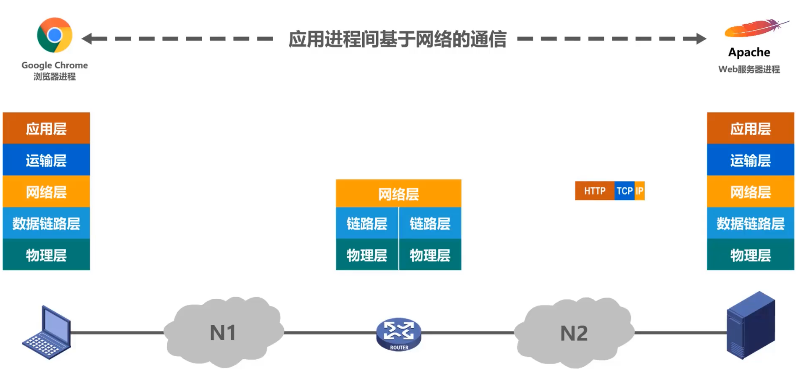

计算机网络概述
计算机网络已由一种通信基础设施发展成为一种重要的信息服务基础设施。已经像水、电、煤气这些设施一样，成为我们生活中不可或缺的一部分。
计算机网络概述
交换方式
电路交换
因为计算机数据是突发是地出现在传输线路上，当用户正在输入和编辑一份待传输的文件时，用户所占用的通信资源暂时未被利用，该通信资源也不能被其他用户利用，宝贵的通信线路资源白白被浪费。因此计算机网络通常采用分组交换，而不是电路交换。
分组交换
假设主机H6的用户要给主机H2的用户发送一条消息，通常我们把表示该消息的整块数据称为一个报文。在发送报文之前，先把较长的报文划分称为一个个更小的等长数据段。在每一个数据段前面，加上一些有必要的控制信息组成的首部后，就构成了一个分组，也可简称为“包”，首部称为“包头”。首部中包含了分组的目的地址，否则分组传输路径中的各分组交换机（路由器），就不知道如何转发分组了。分组交换机收到一个分组后，先将分组暂时存储下来，再检查其首部，按照首部中的目的地址进行查表转发，找到合适1的转发接口，通过该接口将分组转发给下一个分组交换机。

主机H6将所构造出的各分组依次发送出去，各分组经过途中各分组交换机的存储转发，最终到达主机H2。
主机H2收到这些分组后，去掉它们的首部，将个数据端组合还原出原始报文。
分组传输过程中其中两种情况（分组丢失、误码、重复…）
- 各分组从源站到达目的站可以走不同的路径（也就是不同的路由）；
- 分组乱序（分组到达目的站的顺序不一定与分组在源站的发送顺序相同）。
发送方所要完成的任务是构造分组和发送分组，路由器（分组交换机）所要完成的任务是缓存分组和转发分组（存储转发），接收方所要完成的任务是接收分组和还原报文。与分组类似，报文交换中的交换结点也采用存储转发方式。但报文交换对报文的大小没有限制，这就要求交换结点需要有较大的缓存空间。报文交换主要用于早起的电报通信网，现在较少使用，通常被较先进的分组交换方式所取代。
报文交换
三种交换方式对比
假设A，B，C，D是分组传输路径上所要经过的4个结点交换机，纵坐标为时间，对于电路交换，通信之前要建立连接；连接建立好之后，就可以使用已建立好的连接进行数据传送；数据传送结束后，需要释放连接，以归还之前建立连接所占用的通信线路资源。
对于报文交换，可以随时发送报文，而不需要事先建立连接；整个报文先传送到相邻结点交换机，全部存储下来后进行查表转发，转发到下一个结点交换机。
对于分组交换，可以随时发送分组，而不需要事先建立连接。构成原始报文的一个个分组，依次在各节点交换机上存储转发。各结点交换机在发送分组的同时，还缓存接收到的分组。
当使用电路交换时，一旦建立连接，中间的各结点交换机就是直通形式的，比特流可以直达终点；
当使用报文交换时，整个报文需要在各结点交换机上进行存储转发，由于不限制报文的大小，因此需要各结点交换机都具有较大的缓存空间。
当使用分组交换时，构成原始报文的一个个分组，在各结点交换机上进行存储转发，相比报文交换，减少了转发时延，还可以避免过长的报文长时间占用链路，同时也有利于进行差错控制。
计算机网络的定义和分类
定义
简单定义：一些互相连接的、自治的计算机集合。
互连：指计算机之间可以通过有线或无线的方式进行数据通信；
自治：指独立的计算机，它有自己的硬件和软件，可以单独运行使用；
集合：指至少需要两台计算机
现阶段较好的定义：计算机网络主要是由一些通用的、可编程的硬件互连而成的，而这些硬件并非专门用来实现某以特定目的（例如，传送数据或视频信号）。这些可编程的硬件能够用来传送多种不同类型的数据，并能支持广泛的和日益增长的应用。
计算机网络所连接的硬件，并不限于一般的计算机，而是包括了智能手机等智能硬件。
计算机网络并非专门用来传送数据，而是能够支持很多种的应用。
分类

计算机网络的性能指标
速率

带宽
吞吐量
时延
时延带宽积
往返时间

利用率
丢包率
计算机网络体系结构
常见计算机网络体系结构
分层的必要性
分层思想举例
应用层按HTTP协议的规定，构建一个HTTP请求报文，应用层将HTTP请求报文交付给运输层处理。
运输层给HTTP请求报文添加一个TCP首部使之成为TCP报文段，TCP报文段的首部的作用主要是为了区分应用进程以及实现可靠传输。运输层将TCP报文段交付给网络层处理。
网络层给TCP报文段添加一个IP首部使之成为IP数据报，IP数据报的首部的作用主要是为了使IP数据报可以再互联网上传输，即被路由器转发。网络层将IP数据报交付给数据链路层处理。
数据链路层给IP数据报添加一个首部和一个尾部使之成为帧，以太网帧首部的作用主要是为了让帧能够在一段链路上或一个网络上传输，能够被相应的目的主机接收；以太网帧尾部的作用是为了让目的主机检查所接收到的帧是否有误码。数据链路层将帧交给物理层。
物理层将帧看作是比特流，由于N1是以太网，因此物理层会给比特流前面添加前导码，前导码作用是为了让目的主机做好接收帧的准备。物理层将添加有前导码的比特流，变换成相应的信号发送到传输媒体，信号通过传输媒体到达路由器。
路由器物理层将信号变换为比特流，去掉前导码后，将其交付给数据链路层。
数据链路层将帧的首部和尾部去掉后，将其交付给网络层。
网络层解析IP数据报的首部，从中提取出目的网络地址，然后查找自身的路由表，确定转发端口，以便进行转发，网络层将IP数据报交付给数据链路层。
数据链路层给IP数据报添加一个首部和一个尾部使之成为帧。数据链路层将帧交付给物理层。
物理层将帧看做是比特流，由于N2是以太网，因此物理层会给比特流前面添加前导码，物理层将添加有前导码的比特流，变换成相应的信号发送到传输媒体。信号通过传输媒体到达web服务器。
web服务器物理层将信号变换为比特流，去掉前导码后，将其交付给数据链路层。
数据链路层将帧的首部和尾部去掉后，将其交付给网络层。

网络层将IP数据报的首部去掉后，将其交付给运输层。
运输层将TCP报文段的首部去掉后，将其交付给应用层。
应用层对HTTP请求报文进行解析，然后给主机发回HTTP响应报文。
与之前的过程类似，HTTP响应报文需要在Web服务器层层封装，然后通过物理层换成相应的信号，再通过传输媒体传输到路由器。路由器转发该响应报文给主机。主机通过物理层将收到的信号转换成比特流。之后通过逐层解封，最终取出HTTP响应报文。
专用术语
实体
协议

协议三要素：语法、语义、同步
语法： 定义所交换信息的格式（定义了所交换信息由哪些字段以及顺序构成）
语义：定义收发双方所要完成的操作
HTTP语义规定：主机要访问远程Web服务器，它会构建一个HTTP的Get请求报文，然后将其发送给Web服务器。Web服务器收到该报文并进行解析，知道这是一个HTTP的GET请求报文。于是就在自身内部查找所请求的内容， 并将所找到的内容封装在一个HTTP响应报文中发回给主机。主机收到HTTP响应报文后，对其进行解析，取出所请求的内容并由浏览器解析显示。
同步：定义收发双发的时序关系